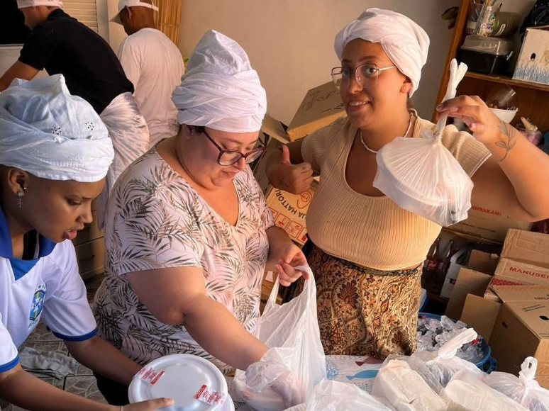

Nossa feijoada anual é realizada todo mês de abril, é uma celebração rica em cultura e tradição. Neste dia especial, é costume reunir amigos e familiares para compartilhar uma deliciosa feijoada, prato que simboliza a união e a força da comunidade. E para celebrar a força da comunidade, nada mais justo do que levar a feijoada até eles, a nossa comunidade... Essa é a nossa pratica de todos os anos!
A feijoada, preparada com feijão preto, carnes variadas e temperos especiais, é servida com arroz, couve, farofa, e repleta de carinho. Criando uma refeição que é tanto um banquete quanto uma forma de agradecimento.
Que neste dia, possamos celebrar a vida, as nossas raízes e a importância da união em nossas vidas.